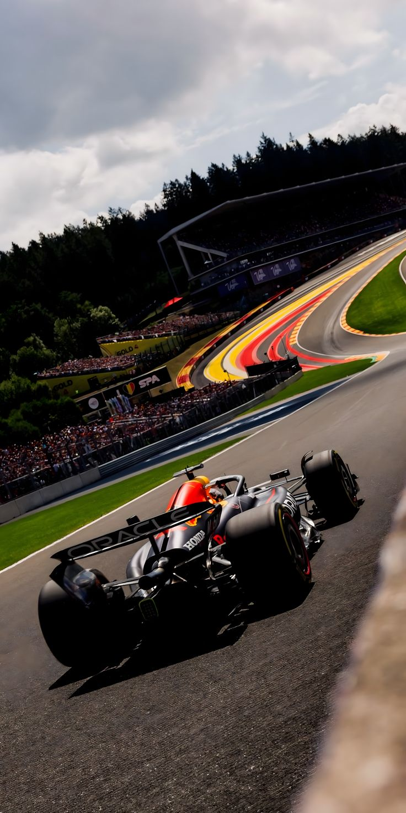
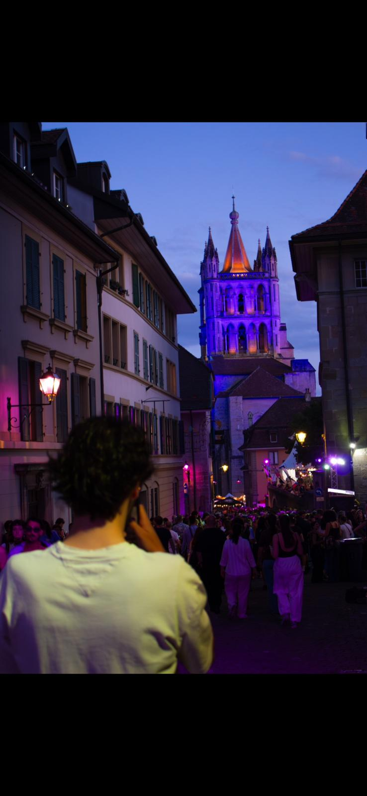
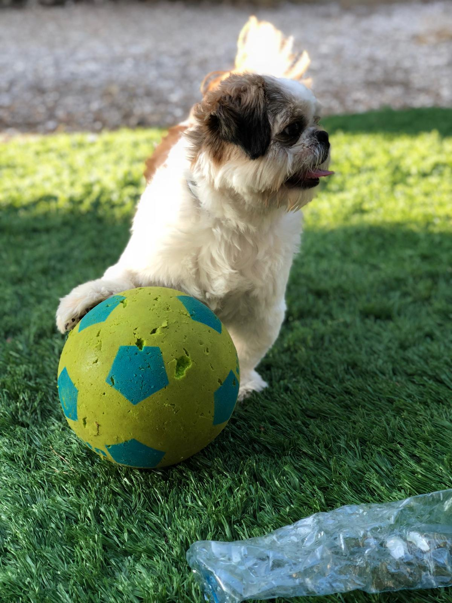
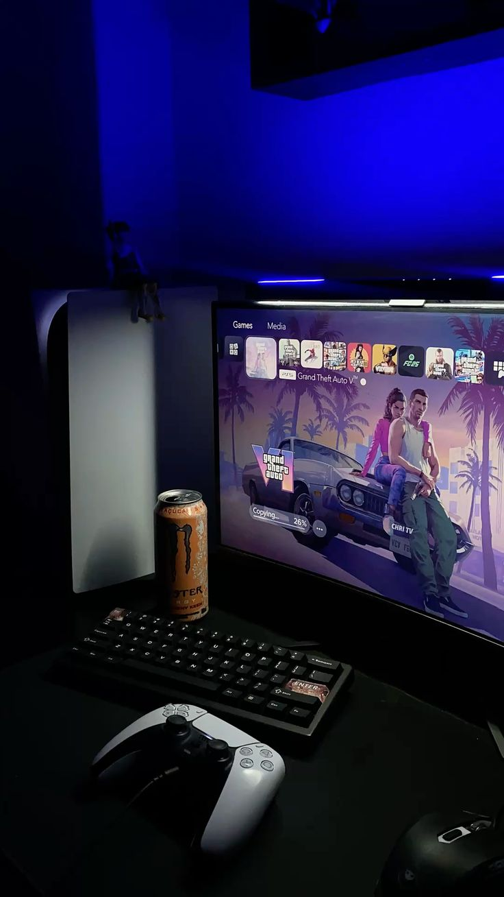

Un peu plus
sur
moi.
Ingénieur des médias. Développeur front-end. Designer UX/UI. Basé en Suisse, curieux par nature.

Qui je suis.
Je suis Nuno Amaro, étudiant en 3e année d'Ingénierie des Médias à la HEIG-VD à Yverdon-les-Bains, en Suisse.
Je m'intéresse particulièrement à l'intersection du design et de la technologie — construire des expériences digitales à la fois visuellement fortes et techniquement solides. J'aime travailler sur des projets où je peux penser à l'utilisateur, concevoir l'interface et contribuer au code.
Ma formation à la HEIG-VD me donne une perspective globale sur les projets digitaux — de la compréhension du besoin utilisateur à la conception de l'interface et à la participation au développement.
J'aime transformer les idées en expériences digitales.
Mon parcours.
Quand je ne conçois pas.
Sport
Football, condition physique & discipline.
Sport
Le sport est mon moteur quotidien. Passionné de football et d'entraînement physique, j'y puise ma rigueur, le sens du collectif et le dépassement de soi.

Voitures
Design automobile, ingénierie & motorsport.
Voitures
Une passion née dès le plus jeune âge — du design automobile à l'ingénierie mécanique en passant par le sport auto et la Formule 1.

Photo & Vidéo
Lumière, composition & storytelling visuel.
Photo & Vidéo
Capturer la lumière, composer des plans et raconter des histoires visuelles. Le prolongement naturel de ma sensibilité créative et technique.

Animaux
Loyauté, énergie & connexion essentielle.
Animaux
Grand amoureux des animaux, de leur authenticité et de leur énergie positive. Passer du temps avec eux me permet de déconnecter et de me ressourcer.

Gaming
Univers immersifs, ergonomie UI/UX & stratégie.
Gaming
Les jeux vidéo m'inspirent par leur narration immersive, la création d'univers interactifs et l'ergonomie poussée de leurs interfaces UX/UI.
Amis
Rires partagés, projets & inspiration mutuelle.
Amis
Partager des moments forts, des rires et des idées ambitieuses avec mes amis proches constitue la base de mon équilibre et de ma motivation.
Envie de collaborer ?
Que ce soit pour un projet, un stage ou juste une conversation — je suis toujours disponible.